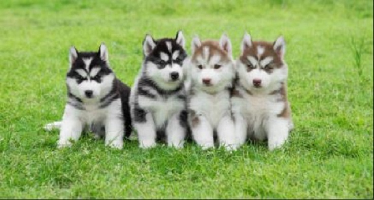

Post #1
Estes cães, ou seus ancestrais, são conhecidos na Sibéria há milhares de anos, em uma região específica a leste dos Montes Urais, inicialmente utilizados como cães multifuncionais foram especialmente selecionados ao longo de centenas de anos pelos Chukchi, um povo que vive na região, para puxar trenós em condições de frio extremo. Em 1867, quando a Rússia ainda dominava o Alasca,[2] estes cães migraram da Sibéria asiática rumo ao Alasca, e começaram a se popularizar pelo mundo. Um fato histórico contribuiu para a popularização mundial da raça quando uma matilha de huskys e similares ajudaram a salvar a população de Nome, uma aldeia na área americana do Alasca, levando medicamentos e suprimentos aos habitantes isolados por uma tempestade, quando nenhum outro meio de transporte poderia fazê-lo. Por este feito, dois exemplares em particular tornaram-se muito famosos, o cão chamado Balto, que estava como líder do trenó no momento da chegada em Nome, e o cão Togo, que liderou, com 12 anos de idade, o trenó pelo trecho mais perigoso, por estes feitos ocupando lugares na cultura desde então, recebendo monumentos em homenagem, tendo seus corpos empalhados após suas mortes e exibidos em museu, e sendo representados inclusive também em filmes.